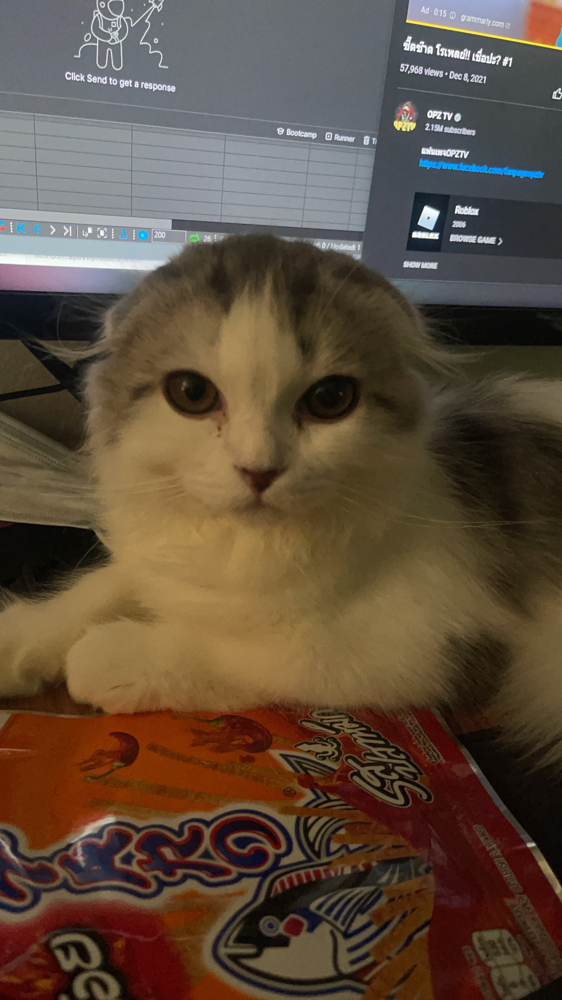
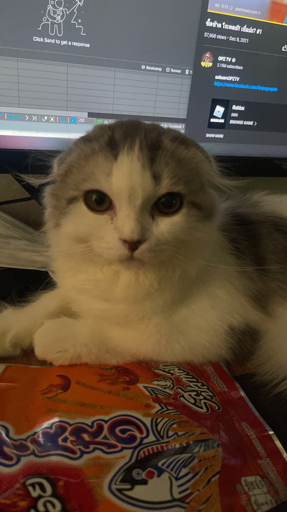
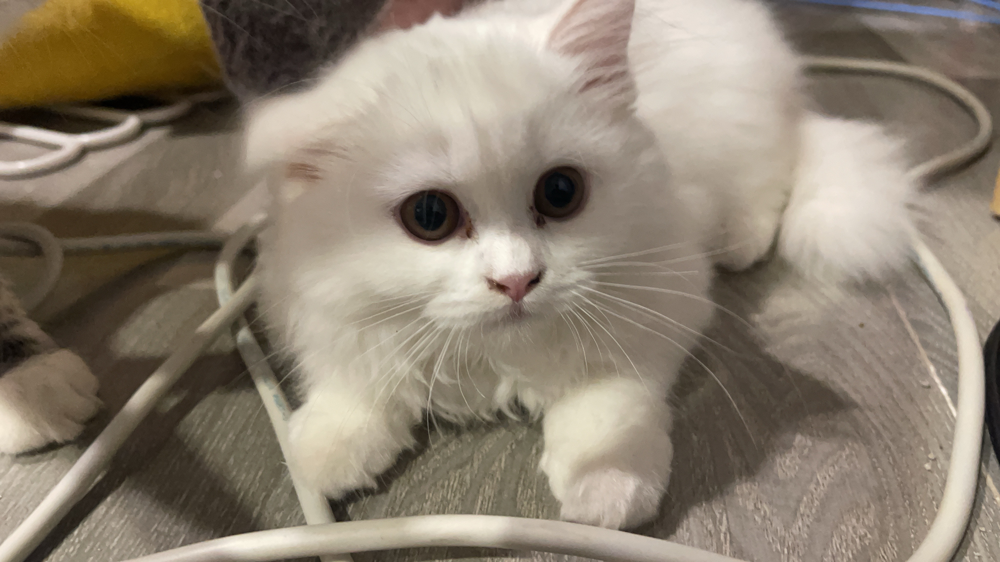
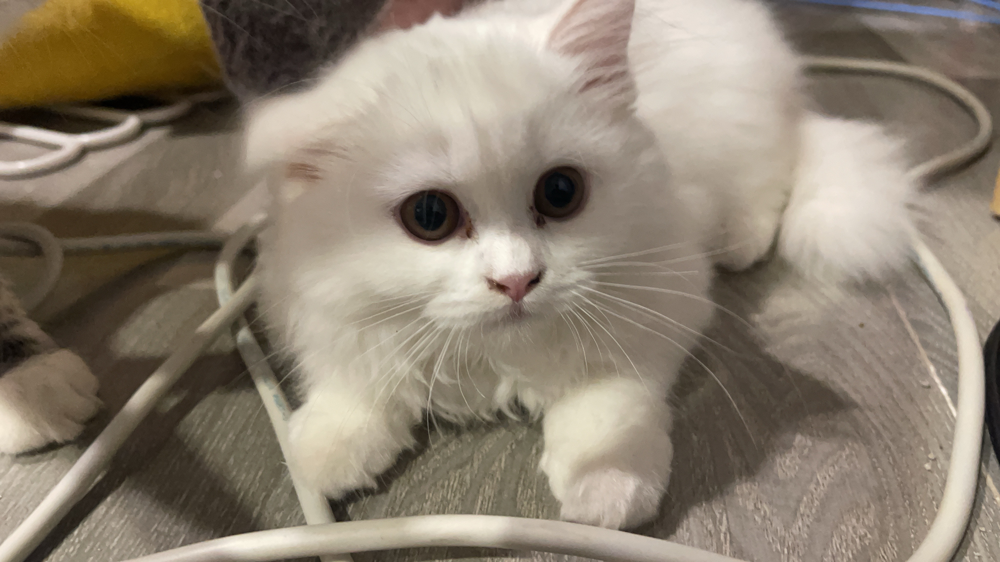

Shabu : The fat Cat
Shabu is American Curl with white fur. He is the leader of the 12 cats family, He like to eat cooked prawn. He is the the biggest cat in the house and he also handsome, everyone like him because he always being cute when orther people play with him and he not rebel when other people hug him or carry him.


 



 
